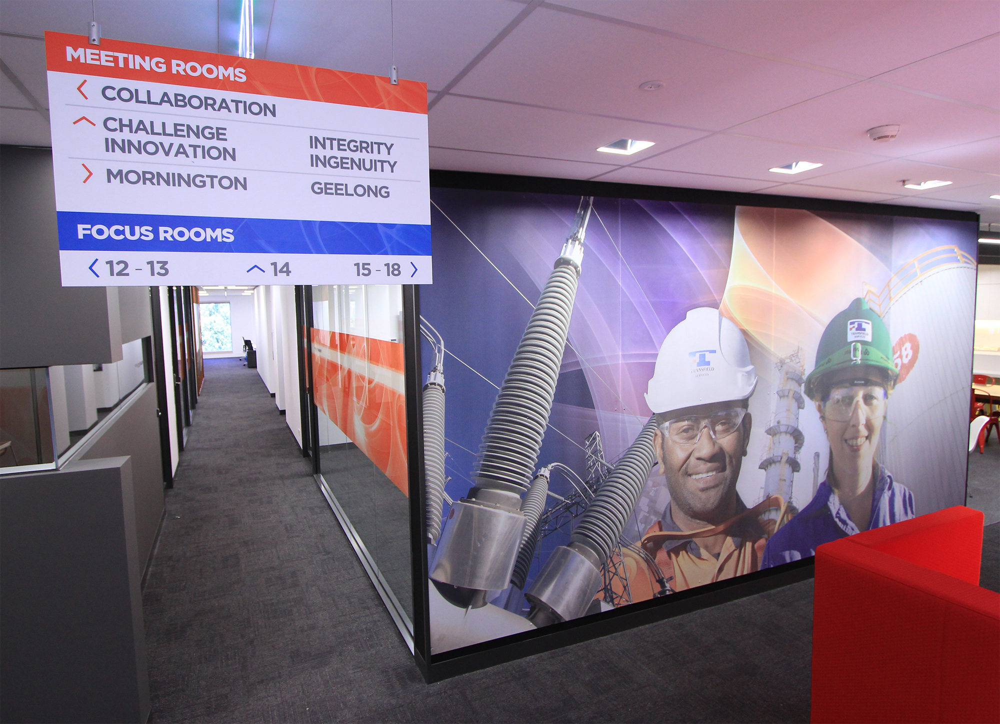

Projects

Feb 2014
Exhibits
Conference Stand
Education Advantage

Jan 2014
Exhibits
Conference Stand
A Little Light

Feb 2014
Environment
Environmental and Wayfinding Design
Transfield Services

Sep 2012
Annual Report
Online Annual Report 2012
Transfield Services

Sep 2012
Annual Report
TSI Fund Annual Report 2012
Transfield Services Infrastrcuture Fund

July 2012
Annual Report
Online Annual Report 2012
Transfield Services Infrastructure Fund

Feb 2014
Online
Research Group Website
Environmental Determinants of Islet Autoimmunity

Cyclist in Berlin. Photo © Terry Mun

At the annual sailing race in Aarhus University. Photo © Terry Mun

Dark corridors. Photo © Terry Mun